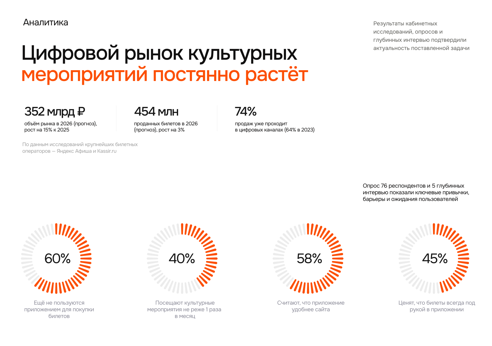
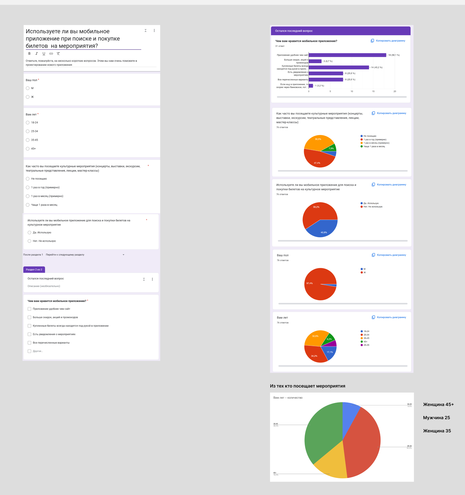
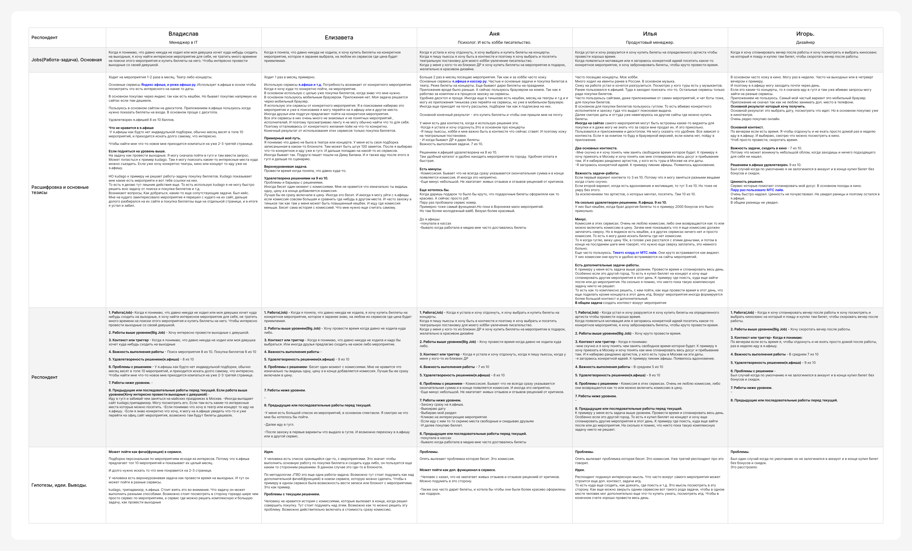

Главный вывод: рынок растёт, покупки уходят в цифру, но ни один сервис не закрывает задачу «провести день», а не просто «купить билет». Три из пяти респондентов раздражает скрытая комиссия.
Рынок
| 352 млрд ₽ | 454 млн | 74% |
|---|---|---|
| объём рынка в 2026 (прогноз), +15% к 2025 | проданных билетов в 2026 (прогноз), +3% | продаж проходит в цифровых каналах (64% в 2023) |
По данным крупнейших билетных операторов — Яндекс Афиши и Kassir.ru

Что показали открытые исследования
- Спрос растёт. По данным GfK, доля горожан, регулярно (раз в 2–3 месяца) посещающих театры, выросла с 15% до 20% за 2022–2024 гг. По данным ICMR за 3 кв. 2025, хотя бы один тип культурных мероприятий регулярно посещают 54% горожан.
- Покупки уходят в агрегаторы. Доля покупающих билеты через онлайн-агрегаторы за два года выросла с 11% до 19% (GfK, 2024). Лидеры по охвату — Яндекс Афиша (24%), Afisha.ru (13%), Kassir.ru (11%), Т-Банк Афиша (8%), Kassy.ru (5%) (ICMR, 2025).
- Приложения проигрывают сайтам. Исторически на специальные приложения приходилось лишь около 7% онлайн-покупок билетов: люди не держат на телефоне несколько билетных приложений ради редких покупок (Гидмаркет).
- Покупка часто откладывается. Распространены покупка «в последний момент» и отложенная покупка: решение принимается через несколько недель после того, как человек узнал о событии. Цена — один из определяющих факторов.
Голос пользователя: «Как бы выглядел идеальный для меня сервис»
Схема выбора расположения — от зрителя к сцене. Желательно с фото зала, чтобы понять, где партер. Можно прилепить угол обзора с каждого места, чтобы понять, как выглядит обзор с места за 5000 рублей и с места за 1000. Возможность добавить в календарь событие, которое ты купил, — сразу кнопкой после покупки. Это же очень удобно, но никто так не делает. И, конечно, отсутствие комиссии.
Опрос · 76 респондентов
| 60% | 40% | 58% | 45% |
|---|---|---|---|
| ещё не пользуются приложением для покупки билетов | посещают культурные мероприятия не реже раза в месяц | считают, что приложение удобнее сайта | ценят, что билеты всегда под рукой |
Что это значит для продукта: большая часть аудитории ещё не пользуется приложениями, поэтому у приложения должна быть ценность сверх «купить билет» — иначе нет причины его устанавливать.
Сырые данные: анкета и диаграммы Google Forms

Глубинные интервью · 5 респондентов
Интервью строились по методологии JTBD: работа, работа выше уровнем, триггер, важность, удовлетворённость текущим решением и проблемы с ним.
| Респондент | Как часто ходит | Big Job | Удовл. текущим решением | Главная боль |
|---|---|---|---|---|
| Владислав, менеджер в IT | 1–2 раза в месяц, театр и концерты | Интересно провести выходные с девушкой | 8 / 10 | Нет персональных подборок, приходится листать до 2–3 страницы |
| Елизавета | Раз в месяц | Выбраться куда-то, когда давно не ходила | 9 / 10 | Комиссия появляется только в конце |
| Аня, психолог, пишет пьесы | Больше 2 раз в месяц | Отдохнуть и быть в контексте театра | 8 / 10 | Комиссия, мало живых отзывов и рецензий, некрасивые подарочные билеты |
| Илья, продакт-менеджер | Часто, концерты | Круто провести время, спланировать весь день в другом городе | 9 / 10 | Комиссия; никто не решает задачу «спланировать день вокруг события» |
| Игорь, дизайнер | Раз в неделю, кино | Скоротать вечер после работы | 9 / 10 | Купил билет без бонусов, потому что не был залогинен |
Расшифровки
Job: Когда я понимаю, что давно никуда не ходил или моя девушка хочет куда-нибудь сходить на выходные, я хочу найти интересное мероприятие, не тратить много времени на поиски и купить билеты, чтобы интересно провести выходные.
Важность: поиск мероприятия — 8/10, покупка билетов — 6/10.
Путь сейчас: Google → KudaGo или Tripadvisor → если хочется в театр или на концерт, то Яндекс Афиша → иногда официальный сайт, где билеты дешевле.
«Был кейс: на KudaGo заинтересовало мероприятие, перешёл на их сайт, долго разбирался, а покупка билетов ещё на отдельной странице — в итоге я устал и забил.»
Job: Когда я поняла, что давно никуда не ходила, я хочу купить билеты на конкретное мероприятие, которое заранее выбрала, на любом сервисе, где цена приемлемая.
Путь сейчас: личный список из ~100 мероприятий в заметках → Google → первый сервис из выдачи. Пользуется мобильным браузером, приложения нет.
«Бесит история с комиссией. Изначально видишь одну цену, а в конце добавляется комиссия. Лучше бы её сразу включали в цену.»
Job: Когда устала — выбрать и купить билеты на концерт. Когда пишу пьесы — быть в контексте и сходить на постановку. Когда у близких день рождения — подарить билеты, желательно в красивом оформлении.
Важность: 7/10. Пользуется десктопом, потому что работает за компьютером.
«Когда даришь подарок, было бы круто, чтобы подарочные билеты оформляли красиво. А сейчас просто PDF.»
Job: Когда устал и хочу разгрузиться или загораюсь конкретной идеей, я хочу купить билеты на артиста, чтобы круто провести время.
Важность: от 3/10 (скучно) до 10/10 (артист мечты).
«Я купил билет на концерт и хочу ещё спланировать этот день: где поесть, куда зайти до или после. Никто пока такую комплексную задачу не решает. Вокруг мероприятия формируется больший контекст.»
Job: Когда я хочу спланировать вечер после работы, я хочу выбрать киносеанс, чтобы скоротать вечер.
Важность: 7/10. Приложение не ставит — жалко места в телефоне, пользуется мобильным браузером.
«Может возникнуть облом, когда заходишь и ничего подходящего для себя не находишь.»

Выводы из интервью
- Комиссия, всплывающая в конце, раздражает — об этом сказали 3 из 5 респондентов. Некоторые уходят сравнивать цены в другие сервисы.
- Нет персональных подборок. Топ-10 мероприятий висит месяц, новое приходится искать вручную.
- Задача шире, чем «купить билет». Люди решают задачу «как провести выходные» и собирают её из нескольких сервисов: KudaGo, Tripadvisor, Афиша, Карты.
- Вокруг события есть свой контекст: как добраться, где поесть, куда зайти после. Это главная возможность для продукта.
- Дополнительные работы: личные списки «куда сходить» в заметках, подарочные билеты, живые отзывы и рецензии критиков.